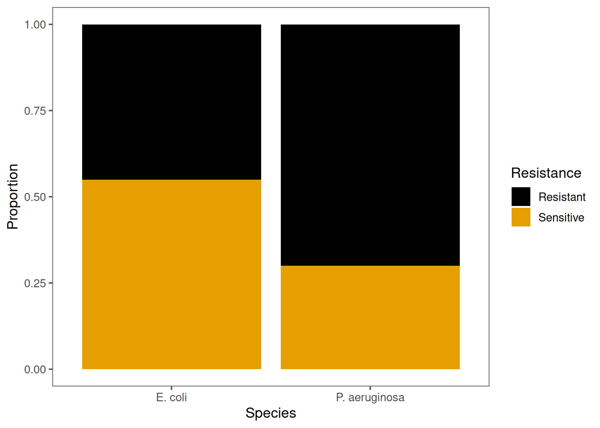

In biology, many questions involve categories rather than numerical measurements.
Do antibiotic resistance phenotypes differ between species?
Is the frequency of a trait the same in males and females?
Do survival outcomes depend on treatment type?
When our data are counts in categories, we use tests designed for categorical data.
Let’s begin by thinking about the kinds of data we often work with in biology. Sometimes, we measure things — like weight, length, or growth rate — and those are continuous variables. But other times, we simply count things. For example, we might count how many isolates are resistant versus sensitive, or how many individuals are male versus female. These are examples of categorical data — we’re dealing with labels, not measurements. So today we’re looking at how we can test for relationships between these categories.”
The chi-squared test of independence
Used when sample sizes are reasonably large.
It compares observed counts in each cell to the expected counts
(if there were no association).
Test statistic:
\[
\chi^2 = \sum \frac{(O - E)^2}{E}
\]
Degrees of freedom:
\[
(r - 1) \times (c - 1)
\]
where r = rows and c = columns.
“The chi-squared test of independence is our go-to test when sample sizes are large enough. It works by comparing what we observed in each cell to what we would expect if there were no relationship between the variables. If the observed counts differ a lot from the expected ones, the chi-squared statistic gets larger, and that gives us a smaller p-value. The degrees of freedom come from the number of rows and columns minus one — that tells us how many independent comparisons we’re making.”
Contingency tables
A contingency table summarises counts across combinations of categories.
Let’s say we work on a hospital microbiology ward and want to know if one bacterial species has more resistance than another:
Resistant
Sensitive
Escherichia coli
45
55
Pseudomonas aeruginosa
70
30
Null hypothesis (H₀): There are equal numbers of resistant organisms for each species.
Alternative hypothesis (H₁): One species has more resistant organisms.
“Here’s how we typically summarise categorical data — in what’s called a contingency table. Each cell shows a count for one combination of the two variables. In this example, we’re looking at bacterial species versus resistance status. Let’s say we work on a hospital microbiology ward and want to know if one bacterial species has more resistance than another: We can see that E. coli has 45 resistant isolates and 55 sensitive ones, whereas P. aeruginosa has 70 resistant and 30 sensitive. Visually, you can already get a sense there might be a difference — but we need a statistical test to confirm that difference is meaningful.”
“The null hypothesis, H nought, says there’s no association between the variables — in other words, resistance doesn’t depend on species. The alternative says there is an association — maybe P. aeruginosa really does have higher resistance. So, just like in other tests we’ve seen, we’re asking: is the pattern in our data unlikely to have arisen by random chance alone?”
Running a chi-squared test in R
If we have a tibble containing our results, we can create a contingency table using the table() function, and then we run chisq.test() on that table.
# Example datasetmicrobiology <-tibble(Species =c(rep("E. coli", 100), rep("P. aeruginosa", 100)),Resistance =c(rep(c("Resistant", "Sensitive"), times =c(45, 55)),rep(c("Resistant", "Sensitive"), times =c(70, 30))))# Create the contingency tabletab <-table(microbiology)# Perform the chi-squared testchisq.test(tab)
Pearson's Chi-squared test with Yates' continuity correction
data: tab
X-squared = 11.785, df = 1, p-value = 0.000597
We reject H₀: resistance and species are associated. A higher proportion of P. aeruginosa isolates were resistant (chi-square test: \(\chi_1^2=11.8\), \(p=0.0006\)).
“Let’s look at this in R. Here, I’ve made up a small dataset with two species and their resistance status. We create a contingency table using the table() function, and then we run chisq.test() on that table. The output gives us a chi-squared value, the degrees of freedom, and a p-value. Here, the chi-squared statistic is 12.1, with 1 degree of freedom, and a p-value of 0.0005. That’s well below 0.05, so we’d reject the null hypothesis — meaning there’s evidence of an association between species and resistance.”
Checking assumptions
The chi-squared test assumes:
Counts are frequencies, not proportions.
Each observation is independent.
Expected counts are not too small (ideally ≥ 5 in each cell).
If these assumptions are violated, use Fisher’s exact test.
“Before you trust the result, it’s always good to check the assumptions. The first is that you’re working with counts, not percentages. The second is that each observation is independent — for example, each bacterial isolate should come from a separate sample. And finally, your expected counts should ideally be at least five in every cell. If they aren’t, then Fisher’s exact test is the better choice, because it calculates an exact probability rather than relying on an approximation.”
Fisher’s exact test
Fisher’s exact test is an alternative to the chi-squared test when expected counts are small (usually <5 in one or more cells).
It calculates the exact probability of getting the observed data (or something more extreme) under the null hypothesis of independence.
# Works on the same contingency tablefisher.test(tab)
Fisher's Exact Test for Count Data
data: tab
p-value = 0.0005602
alternative hypothesis: true odds ratio is not equal to 1
95 percent confidence interval:
0.1877534 0.6522577
sample estimates:
odds ratio
0.3525707
The odds ratio from Fisher’s exact test tells you how much more (or less) likely an outcome is in one group compared to another. An odds ratio \(>1\) means the outcome is more likely in the first group, while \(<1\) means it’s less likely.
We would report this as: P. aerugionsa isolates were more likely to be resistant than E. coli isolates (Fisher’s exact test: odds ratio = 0.35, \(p = 0.0006\)). (NB: there are no degrees of freedom to report here because Fisher’s test is an exact test.)
NoneWhy doesn’t Fisher’s test report degrees of freedom?
Unlike the chi-squared test, Fisher’s exact test does not have degrees of freedom. This is because it doesn’t rely on a theoretical distribution like chi-squared, it calculates the exact probability of observing the data (and more extreme tables) under the null hypothesis. So when reporting Fisher’s test results, include the p-value and the odds ratio, but no degrees of freedom.
Fisher’s test is particularly useful when your sample size is small or when you have low counts in one or more cells. It calculates the exact probability of seeing a table like this — or something even more extreme — if the null hypothesis were true. Here’s what that looks like in R. You simply run fisher.test() on the same table. The odds ratio from Fisher’s exact test tells you how much more (or less) likely an outcome is in one group compared to another. An odds ratio \(>1\) means the outcome is more likely in the first group, while \(<1\) means it’s less likely.
For larger datasets, chisquare and Fisher’s tests will give you nearly identical p-values, so you can safely use chi-squared in those cases.
Visualising contingency data
A bar plot helps visualise differences between categories.
Warning: `scale_fill_colorblind()` was deprecated in ggthemes 5.2.0.

“Let’s also visualise this relationship. In R, we can use ggplot() to create a stacked or proportional bar chart. Here, the height of each bar represents the proportion of resistant versus sensitive isolates. You can immediately see that Pseudomonas has a higher proportion of resistant isolates. This visual check helps confirm the statistical result — it’s a good habit to always visualise before and after testing.”
Recap & next steps
The chi-squared test and Fisher’s exact test help us answer the same question — are two categorical variables independent, or is there an association between them?
When your sample is large and all expected counts are reasonably high, the chi-squared test works well. But when numbers are small or one category is rare, the Fisher’s exact test gives a more reliable answer because it calculates the exact probability of your results under the null hypothesis.
Whichever test you use, always check that its assumptions are met, and report your findings clearly, including which test you used, the degrees of freedom (for chi-squared test), the test statistic, and the p-value.
“To recap: oth chi-squared and Fisher’s exact tests are ways to check for associations between two categorical variables. The main difference is that chi-squared relies on large sample approximations, while Fisher’s gives an exact answer for small samples. Always make sure to check your expected counts, and when you report your results, include the test name, the test statistic, degrees of freedom, and the p-value.”
❓Check your understanding
What kind of biological questions are best answered using chi-squared or Fisher’s exact tests?
None✅ Answer
These tests are used for questions about associations between categorical variables, e.g., whether resistance differs between bacterial species, or whether a treatment affects survival. They’re ideal when your data are counts in categories, not continuous measurements.
What does a significant result from a chi-squared or Fisher’s test tell you?
None✅ Answer
It tells you there is evidence of an association between the two categorical variables — they are not independent.
When should you use Fisher’s exact test instead of a chi-squared test?
None✅ Answer
Use Fisher’s exact test when sample sizes are small or when any expected cell count is below 5. It calculates the exact probability of the observed data under the null hypothesis, rather than using an approximation like the chi-squared test.
What does the odds ratio reported by Fisher’s test represent?
None✅ Answer
The odds ratio describes the strength and direction of the association between two categorical variables. For example, an odds ratio of 3.5 means one group is 3.5 times more likely to show the outcome than the other.
How would you report a chi-squared test result in a paper?
None✅ Answer
Report the test statistic, degrees of freedom, and p-value, for example:
“There was a significant association between species and resistance (χ²(1) = 12.1, p < 0.001).” include a short interpretation: “P. aeruginosa isolates were more frequently resistant than E. coli.”